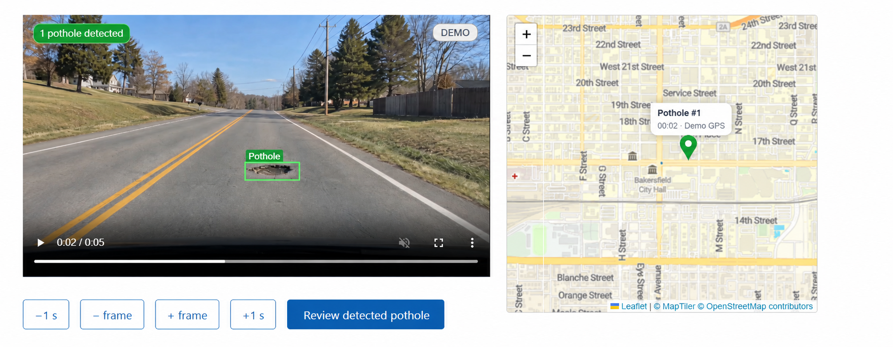
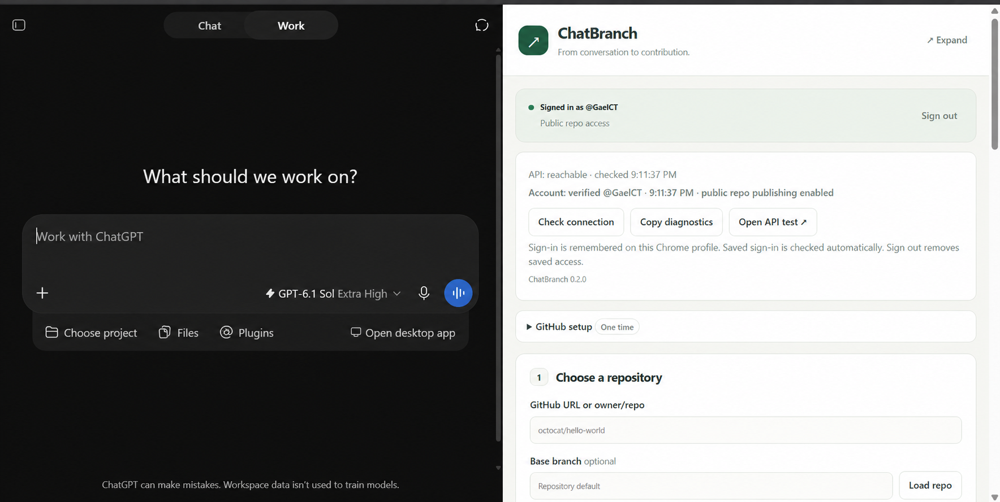
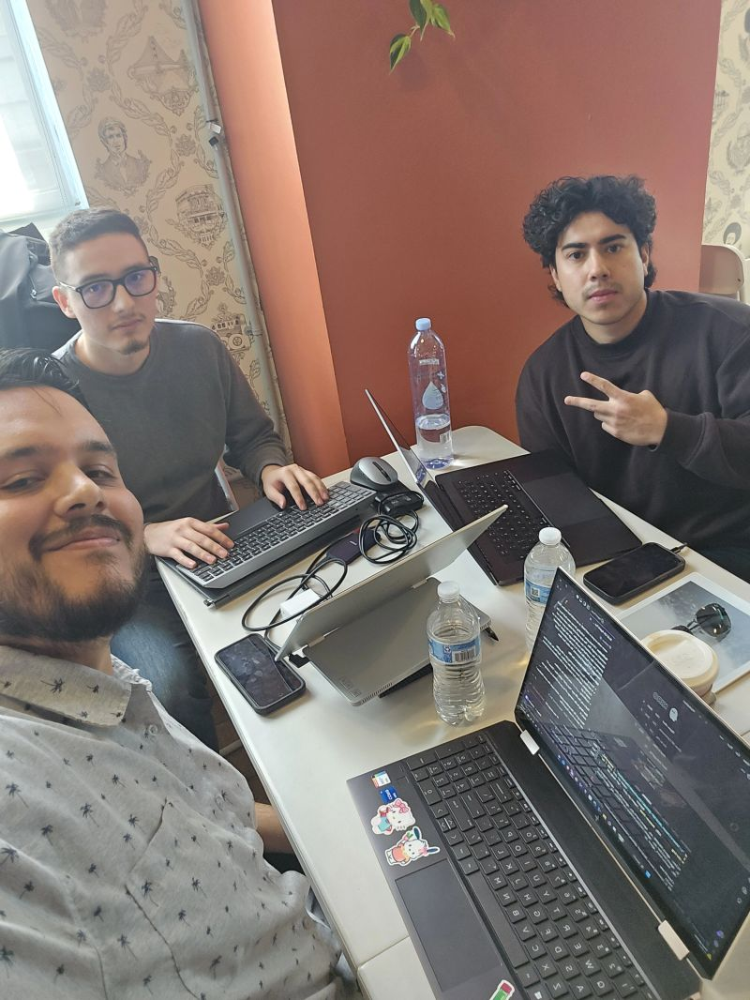

A look at what I've been building.
Real-time ASL recognition: a Random Forest classifier trained on a self-collected MediaPipe dataset of ~32,000 rows, with a local LLM text-correction layer that fixes spelling errors and timing-induced spaces — all running offline.

YOLO pothole detector trained on 300 hand-annotated road images, wired into a Next.js + TypeScript + SQLite reporting pipeline that pairs photos with GPS coordinates and drafts city-service requests.

AI-assisted developer tool that structures LLM output into parseable JSON for GitHub workflow automation — built to help students manage branching, commits, and PRs through natural language.

AI-Generated Video Quality Review Prototype.